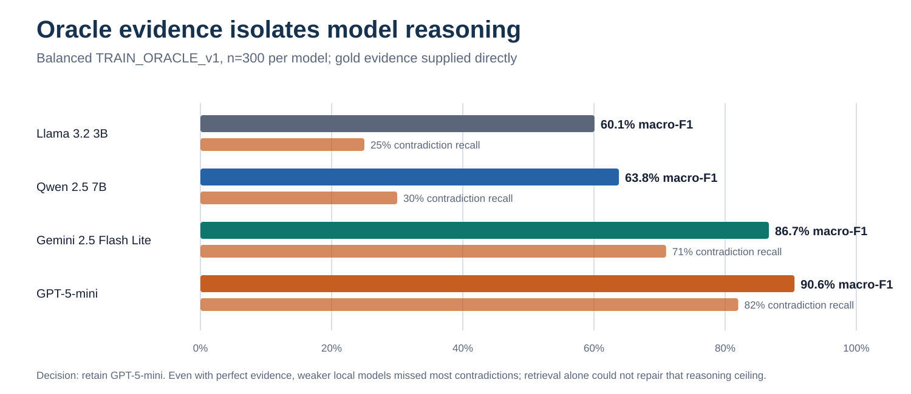
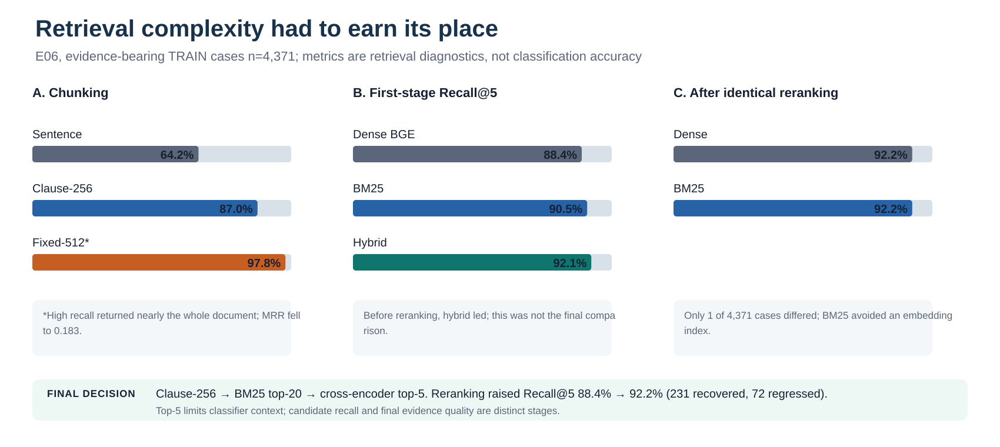
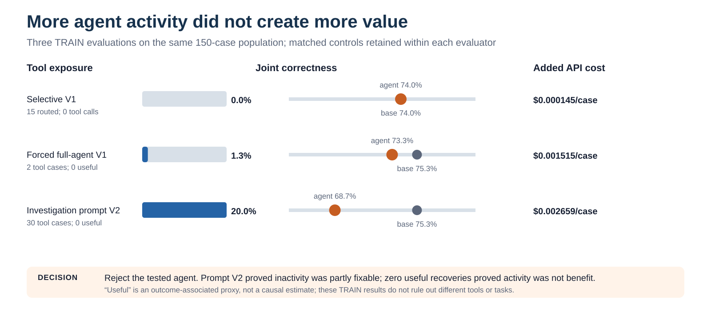
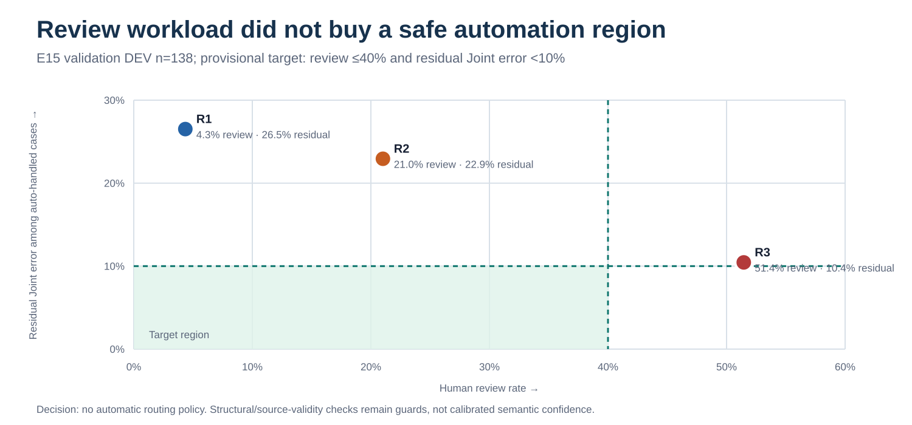
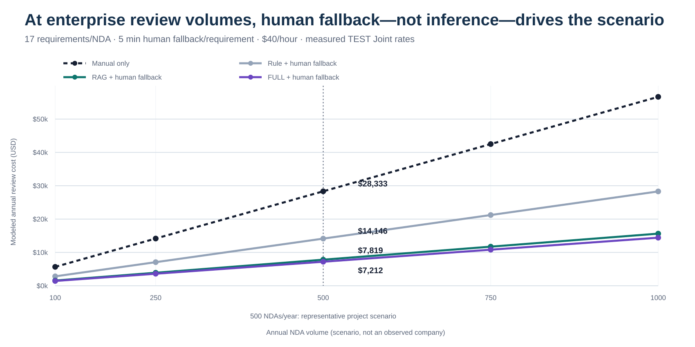

NDATrace: When Less Architecture Produced the Stronger Result
1. The business problem and actual contribution
Tina, an enterprise legal-operations analyst, currently reads a vendor NDA against 17 confidentiality requirements before counsel decides what to do. Keyword search is a weak substitute: the official rule baseline found only 16.8% of contradictions because obligations can be paraphrased, qualified by exceptions or assembled across clauses. NDATrace changes the hand-off, not the legal authority. It proposes a structured label, exposes the quoted clauses and lets Tina record an approval, override or rejection. That demonstrated workflow justifies semantic AI over rules while keeping verification human. I measured classification, evidence and operating signals; I did not measure time saved, legal outcomes or realised productivity.
2. Architecture and build-versus-rent decisions

| Layer | Decision | Implemented choice | Boundary or gap |
|---|---|---|---|
| Compute | Rent / local comparison | OpenRouter inference; Ollama for local experiments | Provider dependency; local energy/compute not monetised |
| Model | Rent | GPT-5-mini, temperature 0 | No fine-tuning; behaviour remains probabilistic |
| Data | Reuse | ContractNLI, CC BY 4.0 | Public, short NDAs are not enterprise validation |
| Retrieval | Build + reuse libraries | Clause chunks, BM25, cross-encoder | Project owns configuration, not pretrained reranker |
| Orchestration | Build | Single bounded call; no agent or confidence gate | No automatic FULL fallback |
| Evaluation | Build | Split discipline, paired tests, Joint evaluator | Gold overlap is an imperfect legal proxy |
| Serving / interface | Build | FastAPI + Next.js + persisted decisions | Replaced the proposed thin Streamlit demo to support review history and a real decision API |
| Governance / observability | Build, incomplete | Source checks, injection flags, rate/concurrency/cost limits, logs | No enterprise identity, access policy or production monitoring |
I placed semantic interpretation inside one rented model call and kept provenance, parsing, resource limits and final authority outside it. This makes failures observable and prevents the model from validating its own claims. The cost is integration complexity and dependence on a hosted model whose reasoning I cannot fully control. Retrieval is also an ownership choice: bounded context is predictable to serve, yet omitting a decisive clause becomes my system's failure. Reusing mature ranking libraries reduced implementation risk, but their pretrained objectives may not reflect legal relevance. A FastAPI/Next.js split replaced the proposed thin Streamlit interface because recorded reviewer decisions and history required a persistent backend rather than a disposable demonstration shell.
3. The complete experimental journey

| Engineering question | Alternatives and population | Critical evidence | Decision and accepted limitation |
|---|---|---|---|
| Which reasoner should receive retrieval effort? | Llama, Qwen, Gemini and GPT with gold evidence; balanced TRAIN n=300/model | GPT macro-F1 0.906, contradiction recall 82%; Qwen 0.638 and 30% | GPT-5-mini. Hosted dependency and higher output cost accepted for the measured reasoning advantage. |
| How much instruction helps? | Minimal P0, definitions P1 and procedure P2; Qwen TRAIN n=150; later GPT controls | P0 led Qwen macro-F1 0.507 and contradiction recall 22%; added structure increased C→NM errors; GPT confirmation did not establish a replacement | Freeze P0. Prompt complexity must show repeatable gain, not plausibility. |

| Component | Alternatives | Measured implication | Frozen choice |
|---|---|---|---|
| Chunk boundary | Sentence, clause-256, fixed-512 | 64.2%, 87.0%, 97.8% Recall@5 respectively; fixed-512 saturated by returning near-whole documents and MRR fell to 0.183 | Clause-aware 256 tokens, no effective overlap |
| Candidate generator | BM25, dense BGE, hybrid RRF | Pre-rerank Recall@5 90.5%, 88.4%, 92.1%; after identical reranking BM25 and dense differed on 1/4,371 cases | BM25 top-20; avoid an unearned vector index |
| Final context | K=3, 5, 10; top-11 classification test | MRR flattened after K=5; top-11 Joint +4 points but p=0.263 and input +64% | Cross-encoder top-5; wider context rejected |
| Experiment and population | Decisive experimental evidence | Engineering decision |
|---|---|---|
| Stage 1 Establish intelligence | ||
| Majority and deterministic Rule baselinesOfficial TEST · n=2,091E04B · final comparison | Majority: 46.3% accuracy; 0% Joint.Rule: 59.0% accuracy; 50.1% Joint; 16.8% Contradiction recall. | Retain Rule as a comparator, not the product. Semantic interpretation is required, but the zero-API-cost floor remains visible. |
| Oracle model comparisonBalanced TRAIN diagnostic · n=300/model · gold evidenceE01 notebook · metrics | GPT-5-mini: Macro-F1 0.906; Contradiction recall 82%.Gemini: 0.867; 71%. Qwen: 0.638; 30%. | Select hosted GPT-5-mini. Accept provider dependency and higher cost for the strongest measured reasoning ceiling; gold evidence still leaves reasoning error. |
| Controlled prompt variantsQwen TRAIN n=150; GPT TRAIN n=150 + fresh confirmation n=150E03 · E12B · E12C | Qwen P0/P1/P2: Macro-F1 0.507/0.448/0.403; Contradiction recall 22%/6%/2%.GPT P3 versus P0: +8 Joint cases initially, −3 on document-disjoint confirmation; pooled +1.7 points, 95% CI [−1.7, +5.0]. | Retain minimal P0. Added instruction complexity did not produce a repeatable gain. |
| Stage 2 Optimize evidence | ||
| Chunk-boundary experimentEvidence-bearing TRAIN · n=4,371E06 notebook · summary | Recall@5 / MRR: clause-256 87.0%/0.276; sentence 64.2%/0.441.Fixed-512: 97.8% recall but MRR 0.183 because near-whole documents saturated top-5. | Choose clause-aware 256-token chunks. Preserve useful clause units without treating document saturation as retrieval quality; configured overlap 50 is not applied by the clause-aware chunker. |
| Candidate retrieval and cross-encoder rerankingMatched TRAIN · n=4,371 · common clause-256 candidatesE06 summary · matched control | Before reranking: BM25/dense/hybrid Recall@5 90.5%/88.4%/92.1%.After top-20 reranking: all ≈92.2%; BM25 and dense differed on 1/4,371 cases. Reranking recovered 231 and regressed 72 versus dense alone. | Select BM25 top-20 → cross-encoder top-5. Reranking earns its cost; a dense index and hybrid fusion do not after reranking. |
| Top-K static context expansionMatched TRAIN · top-5 versus top-11 · n=150E12A notebook · analysis | Top-11: Joint +4.0 points, but p=0.263; input tokens +64%.Recoveries were offset by distractor-driven regressions. | Keep top-5 context. Wider static context increased cost without establishing a reliable quality gain. |
| Stage 3 Select architecture | ||
| FULL versus RAGOfficial TEST · matched n=2,091 · same GPT prompt/evaluatorE20 report · summary | Joint: FULL 74.6% versus RAG 72.5%; paired McNemar p=0.0047.RAG efficiency: input tokens −50.4%; inference cost −16.8%. | Keep FULL as the measured quality reference; retain RAG as the bounded-context prototype. This accepts a measured Joint disadvantage for predictable context and lower inference cost. |
| Stage 4 Test added autonomy | ||
| Selective-agent evaluationTRAIN n=150 · 15 routed; 135 frozen base outputsE11 notebook · paired comparison | Joint: 74.0% → 74.0%; one recovery and one regression; p=1.0.Behaviour: 0 tool calls across 15 triggers; $0.0218 incremental spend. | Reject the selective agent. Routing incurred cost but produced zero net Joint value under this historical evaluator protocol. |
| Forced full-agent and investigation-prompt testsSame TRAIN n=150 · every case enters agent · current evaluator v2full-agent · prompt V2 | Full-agent V1: Joint 75.3% → 73.3%; tools used on 2/150; 0 useful tool recoveries.Investigation V2: tools used on 30/150, but useful tool-associated recoveries remained 0; Joint fell to 68.7%. | Reject the tested agent, not merely its router. Forcing investigation changed tool-use behaviour but reduced evidence-grounded quality. |
| Automatic confidence/review routingFresh DEV validation · n=138 · R1–R3 policiesE15 notebook · results | R3: reviewed 51.4%, captured 82.5% of Joint failures, left 10.4% residual Joint error.It missed both provisional criteria: ≤40% review and <10% residual error. | Reject automatic confidence routing. Retain R1 only for structural/source-integrity flags and require human verification. |
| Stage 5 Validate operations | ||
| Adversarial robustness and safeguardsCurated diagnostic · 20 clean/attack pairs; 11 injection pairsE16 · E22 controls | Hosted diagnostic: Joint 85% clean → 75% attack; 4/11 injection patterns succeeded.Controls: resource limits passed targeted regression; the pattern-based injection guard remained partial. | Quarantine suspicious inputs and require human verification. Source-valid quotations do not prove that embedded instructions are trustworthy. |
| Targeted difficult-case evaluationCurated DEV regression battery · n=49 · not representativeE24 notebook · analysis | Joint: Rule 44.9%; FULL 73.5%; RAG 67.3%.Three of four documented exception/carve-out cases still failed; multi-span evidence losses persisted. | Maintain a mechanism-specific regression suite. Do not generalise this deliberately hard DEV battery to the official TEST population. |
| Token economics and cost-to-serve modelMeasured official TEST costs + explicitly hypothetical volume/fallback scenariosE20 measured inputs · E18 model | Measured per requirement: FULL 2,279 input tokens/$0.00202; RAG 1,131/$0.00168; output ≈727/701 tokens.Counterfactual at 500 NDAs/year: selective human fallback yields FULL $7,212 versus RAG $7,819 under the declared 17-requirement, 5-minute, $40/hour assumptions. | Optimize evidence quality before inference cents, while requiring human verification in the actual workflow. Keep measured operating cost separate from hypothetical business scenarios. |
I tested the reasoning ceiling first because optimising retrieval around an inadequate reasoner would misdiagnose the constraint. I then froze model, prompt and retrieval choices before comparing architectures, so each later difference had a narrower explanation. That discipline was difficult: early runs used different models, balanced samples and historically exposed DEV/TEST cases, while a superseded lineage had partially observed TEST. I therefore use earlier work only for mechanism and reserve the re-derived 2,091-case run for final comparisons. I also corrected the evaluator so full-document access was never counted as evidence by construction; the system had to return an explicit overlapping quotation. Negative results were productive: they removed dense retrieval, prompt elaboration, a wider context, the agent and confidence routing rather than letting plausible complexity accumulate.
4. The unexpected architecture result and metric critique
| Population / metric | Rule | FULL | RAG |
|---|---|---|---|
| Official TEST - n=2,091 | |||
| Accuracy | 59.0% | 77.6% | 76.8% |
| Macro-F1 | 0.479 | 0.727 | 0.723 |
| Joint correctness | 50.1% | 74.6% | 72.5% |
| Contradiction recall | 16.8% | 75.5% | 77.3% |
| NotMentioned recall | 90.5% | 62.7% | 63.2% |
| Risk-sensitive recall (C/NM mean) | 53.6% | 69.1% | 70.3% |
| Mean input tokens / API cost | n/a / $0 API | 2,279 / $0.00202 | 1,131 / $0.00168 |
| Mean latency | 0.06 ms local | 7.31 s | 7.14 s |
| Targeted DEV - n=49 (diagnostic, not pooled) | |||
| Accuracy / Macro-F1 | 51.0% / 0.457 | 73.5% / 0.720 | 71.4% / 0.708 |
| Joint / Contradiction recall | 44.9% / 13.3% | 73.5% / 46.7% | 67.3% / 53.3% |

I expected selective retrieval to improve efficiency and possibly evidence quality by removing irrelevant clauses. The first expectation held; the second did not. FULL's 2.1-point Joint advantage was statistically significant even though its accuracy advantage was not. I retained RAG because its context is bounded, its measured inference cost is lower and case 038 shows that excluding a permissive distractor can help. The counter-evidence matters equally: cases 007 and 043 lost or failed to cite necessary spans. ContractNLI agreements are relatively short, so better scaling on long enterprise contracts remains a deployment hypothesis, not a result.
Accuracy cannot establish that Tina received defensible evidence. Joint correctness adds that constraint, but annotated-span overlap still cannot judge whether an explanation is legally adequate, whether the benchmark annotation is contestable or whether a reviewer would accept an alternative clause. Its threshold also treats partial multi-span coverage as a binary outcome. Class-specific recall is necessary because a missed contradiction and an unnecessary escalation have different consequences; averaging them can conceal the rarer class. Finally, public benchmark labels encode fixed hypotheses and annotation choices rather than an organisation's policy, jurisdiction or risk tolerance. The evaluation supports comparative engineering decisions; it does not validate autonomous legal judgment.
5. Agent experiments, failure investigation and rejected complexity
| Evaluation | Exposure and tool use | Outcome vs. matched control | Interpretation |
|---|---|---|---|
| Selective V1 | 15/150 routed; 0 tool calls | Joint 74.0% → 74.0% (1 recovery, 1 regression, net 0); +$0.0218, +6.07 s/escalation | Controller suppressed investigation |
| Full-agent V1 | All 150 forced through agent; 2/150 tool cases, 0/2 useful | Joint 75.3% → 73.3% (net −3 cases); +$0.001515/case, +5.87 s/case | Removing routing did not create value |
| Investigation-prompt V2 | Same 150, prompt encouraged tool use; 30/150 tool cases, 39 calls, 0/30 useful | Joint 75.3% → 68.7% (net −10 cases); +$0.002659/case, +10.36 s/case, 25 fallbacks | Tool use rose; outcomes worsened |

| Policy signal | Review rate | Failure capture | Residual error | Interpretation |
|---|---|---|---|---|
| R1 structural/source validity | 4.3% | 12.5% | 26.5% | Useful guard, poor uncertainty detector |
| R2 label/rule signal | 21.0% | 37.5% | 22.9% | Missed all four contradiction failures |
| R3 combined | 51.4% | 82.5% | 10.4% | Missed both provisional ≤40% workload and <10% error criteria |


| Mechanism | Verified cases | What the contrast revealed |
|---|---|---|
| Partial retrieval + incomplete citation | 007, 043 | RAG omitted some gold spans and failed to cite some available spans |
| Exception / override reasoning | 034, 039, 040 | FULL and RAG shared the same interpretive failure |
| Distractor avoidance | 038 | RAG excluded a permissive clause that misled FULL |
| Annotation caveat | 001 | The benchmark answer itself is substantively debatable |
The first selective controller reached FINAL on all 15 triggers, so I tested the alternative explanation that routing or prompt reluctance—not agency itself—caused failure. Forcing all 150 cases through V1 produced only two tool-using cases and no useful recovery. A V2 prompt then raised tool use to 20%, but useful tool-associated recovery remained zero, Joint fell by 6.7 points, and fallbacks increased. The effectiveness label is outcome-associated, not causal, and all three evaluations are small TRAIN studies. They nevertheless reject the tested agent for lack of value rather than mere tool inactivity; different tools or challenge sets remain untested.
Routing failed a related test. Structural errors were detectable, but semantic mistakes often looked ordinary: the strongest policy still required half the cases to be reviewed and narrowly missed its residual-error threshold. Confidence was not calibrated, and Rule agreement could not expose cases where both systems were wrong alike. The 138-case validation also left wide uncertainty around the residual estimate, so the workload failure was the clearer rejection reason. I therefore made human verification mandatory rather than presenting weak routing as safe automation.
6. Cost-to-serve and business reasoning
| Measure | FULL | RAG |
|---|---|---|
| Mean input tokens | 2,279 | 1,131 |
| Mean output tokens | ~727 | 701 |
| Measured API cost / case | $0.00202 | $0.00168 |
| Mean latency | 7.31 s | 7.14 s |
| Joint correctness | 74.6% | 72.5% |

| Component | Base input | Status and accounting rule |
|---|---|---|
| Workload | 1,000 requirement reviews | Scenario volume |
| Mandatory verification | 5 min/case at $40/hour | Applied once to every architecture; not avoided by correctness |
| Incremental investigation | 10 min × non-Joint rate | Hypothetical proxy after base verification; not measured and not overlapping |
| Inference | Saved TEST cost/case | Measured API spend; Rule local compute remains unpriced |
| Fixed operations | Excluded | Hosting, monitoring and support were not measured; exclusion is not zero cost |

RAG halved input tokens, yet output stayed near 700 tokens per case; the professor's warning was therefore borne out: generated evidence and explanation materially limit the saving from shorter context. Latency barely changed, which further weakens a simple “fewer tokens means faster” claim. Once labour is introduced, the sub-cent inference difference becomes almost irrelevant. The plotted ranking changes when Joint failure is assumed to trigger extra investigation; at zero added investigation, architecture differences reduce almost entirely to measured inference. Neither view proves the cheaper enterprise workflow because review time, error discovery and follow-up are unmeasured. Fixed hosting, monitoring and support are excluded rather than invented. A timed reviewer crossover must record verification time, overrides, escalations, accepted evidence and follow-up investigation before any operating-cost or ROI conclusion.
7. Critical evaluation, difficulties and future development
| Limitation | What experiments established | Current mitigation | Next validation step |
|---|---|---|---|
| Exception and polarity reasoning | Dominant reasoning failures persist across FULL and RAG | Visible evidence; mandatory reviewer | Research 1: independent exception/override battery |
| Multi-span evidence | Retrieval and citation can each lose necessary spans | Top-20 reranking; Joint scoring | Research 2: separate coverage and citation-recall evaluation |
| Short public benchmark | RAG cost is bounded; long-document advantage untested | Claim restricted to ContractNLI | Research 3: longer, varied agreements with expert labels |
| Unknown workflow impact | No reviewer-time or override study exists | Economics labelled scenario-only | Business 1: timed crossover reviewer study |
| Prompt injection | 4/11 patterns succeeded; source-valid text can still be hostile | Pattern flag, quarantine, limits | Research 4: broader adaptive attack evaluation |
| Enterprise controls | Prototype logs decisions but is not production-governed | Public data only | Production: identity, access, retention and monitoring |
The hardest engineering task was separating evidence access from interpretation. Oracle evidence, retrieval diagnostics and case-level traces let me distinguish missing clauses from wrong reasoning, but Joint still compresses several mechanisms into one score. Controlled comparison was another difficulty: changing model, prompt, context and population together would have made the architecture verdict uninterpretable, so I froze layers and disclosed historical exposure rather than overstating evaluation blindness. Budget controls forced forecasts, compact outputs and bounded runs, while latency made every extra call operationally visible.
Important problems remain unresolved. Exception clauses still defeat the strongest architecture; the agent's non-use of tools explains its rejection but not how to build a useful investigator; routing signals do not isolate semantic risk; and a source-valid quotation can contain adversarial instructions. Resource limits contained cost and denial-of-service exposure, but they did not make document instructions trustworthy. My priorities therefore separate research from production: improve exception reasoning and multi-span evidence first, validate on longer agreements and with reviewers next, then expand security testing. Identity, confidentiality controls and monitoring are prerequisites for deployment, not substitutes for better evidence.
8. Conclusion
NDATrace established that semantic AI adds substantial value beyond keyword rules, but additional architecture did not reliably add value beyond the core model-and-evidence path. FULL remained the strongest quality reference; RAG was retained only as a bounded-context operating trade-off, while the agent and automatic routing were removed. The result is a working evidence-grounded reviewer-assistance prototype with explicit human authority. The consequential open question is whether RAG earns its evidence losses on longer, more varied enterprise agreements.
Supporting experimental evidence and reproducibility
The analytical narrative above is intended to stand alone. Detailed experiment artifacts remain linked from the comprehensive matrix rather than reproduced wholesale. The source-of-truth order is: submitted objectives for intended targets; saved canonical results for measurements; executed notebooks and decision records for context; project UI for presentation cues only.
Population discipline. Official TEST n=2,091 supplies the headline Rule/FULL/RAG comparison. TRAIN samples support model, prompt, retrieval, context and agent decisions. DEV n=138 supports routing validation; curated DEV n=49 diagnoses mechanisms. These populations are labelled and never pooled.
Figure selection. The nine regenerated SVGs answer distinct questions: implemented ownership, Oracle reasoning, retrieval design, matched quality/cost, agent value, routing workload/error, population failures, volume-scale fallback economics and mandatory-review sensitivity. Historical E18 screenshots, mixed-population ladders, modeled reliability curves and E24 comparison plots remain preserved in their experiment directories but are not used as current headline evidence.
Reproduction. python scripts/generate_reasoning_report_assets.py regenerates the figures from frozen artifacts; python scripts/build_reasoning_report.py embeds every SVG and all CSS into the single final HTML; python scripts/verify_reasoning_report.py recomputes key metrics, validates links and confirms there are no external display dependencies. No paid inference is involved.
References
[1] Yuta Koreeda and Christopher D. Manning. “ContractNLI: A Dataset for Document-level Natural Language Inference for Contracts.” Findings of EMNLP 2021, 1907-1919. https://aclanthology.org/2021.findings-emnlp.164/.
[2] LegalOn Technologies and In-House Connect. “2025 State of Contracting Survey,” 15 January 2025. Vendor research, n=286; LegalOn sells contract-review software. https://www.legalontech.com/press-releases/2025-survey.
analysis in Sections 1-8; (b) full main report: all visible headings, prose, tables and captions in Sections 1-8; and (c) complete document: the preceding material plus supporting evidence and references. Embedded SVG label text, CSS and the word-count declaration itself are excluded. Counts are regenerated, not manually estimated.